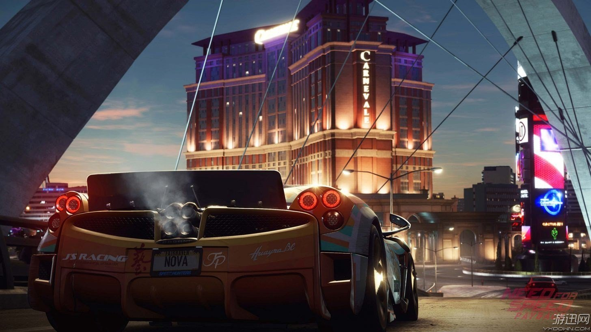

《极品飞车18：宿敌》
《极品飞车18：宿敌》为《极品飞车》系列新作，是由EA新成立的Ghost Games联合Criterion Games工作室所打造，本作将采用与《战地4》相同的寒霜3引擎所开发。在游戏中，玩家可以选择扮演车手或警察，双方都有属于自己的挑战、冒险和奖励。本作中，法拉利车型将首次回归《极品飞车》系列。
在这一代中，玩家将再度允许扮演警察这一角色，同时一成不变的是玩家也可以选择竞速者与在街道上警察展开角逐，而无论是警察一方还是竞速者一方，游戏都将提供给玩家独特的挑战目标。
该作将围绕通缉车与警车这两个“宿敌”进行，同时引入战役合作模式和更好的多人模式。本作采用的是沙盒设定，能让玩家在被通缉的赛车和警车之间任意选择，同时还加入改装，可自定义轮胎，贴纸，引擎等。
《极品飞车18》中通缉车与警车都有各自的挑战模式，奖励和玩法，赛车就是吸引越多的警察来追你，奖励越多，另外逃跑的方式也会影响分数，可进行升级，解锁新车。警车则可以多辆合作追捕通缉车辆，破坏的赛车越多评价更好，然后可解锁新的警察专用车和更棒的追踪技术，模式与《火爆狂飙》的玩法相近，网络模式依旧采用Autolog系统，玩家可与好友进行合作或对抗。
《极品飞车20：复仇》PC中英文版Origin正版分流
游戏名称：极品飞车20：复仇
英文名称：Need for Speed Payback
游戏类型：赛车竞速类(RAC)游戏
游戏制作：Ghost Games
游戏发行：EA
游戏平台：PC
发售时间：2017年11月10日
官方网站：https://www.ea.com/zh-cn/games/need-for-speed/need-for-speed-payback
游戏介绍
《极品飞车20：复仇(Need for Speed Payback)》是由Ghost Games制作，EA发行的一款赛车竞速游戏，采用寒霜3引擎打造，是人气系列《极品飞车》的最新续作。舞台设定在虚构的城市“幸运谷（Fortune Valley）”，玩家将扮演底层出身的3名主角，为了复仇而率领车队踏上极限狂飙的冒险生涯，对抗掌握城市所有赌场、罪犯甚至警察的邪恶组织“庄家（The House）”。
在全新的风险与报酬游戏规则中，玩家必须主动出击获得高额奖励。紧张刺激的警察追逐战再次回归。透过5种独特的车辆分类：赛车、甩尾、越野、直线冲锋与竞速，玩家将能获得无尽的微调性能选项，在任何赛事、任务或挑战中一举逆转战局。找出散落世界各处的弃置车辆，从零开始建立出自己的完美车款。收集、赢得或购买最火热的改装零件，打造出完美的车库收藏。
配置要求
最低配置（720p/30fps）：
系统: 64-bit Windows 7或更高
CPU: i3 6300 @ 3.8GHz或AMD FX 8150 @ 3.6GHz 4线程
内存: 6GB
硬盘: 30GB
显卡: NVIDIA GeForce GTX 750 Ti, AMD Radeon HD 7850或支持DX11的2GB显存显卡
DirectX:DX11
推荐配置（1080p/60fps）：
系统: 64-bit Windows 10或更新
CPU: Intel i5 4690K @ 3.5GHz或AMD FX 8350 @ 4.0GHz with 4线程
内存: 8GB
硬盘: 30GB
显卡: AMD Radeon RX 480 4GB, NVIDIA GeForceGTX 1060 4GB或支持DX11的4GB显存显卡
DirectX:DX11
哥先PO几辆哥车库里的车
